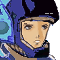

ナレーション 「独立自治権を勝ち取った宇宙移民者群セツルメントは、ようやく得た平和の中に麻痺し、やがては特権主義社会を生み出し、結局は自らが小セツルメントへの圧政を強いるようになる。時に宇宙世紀２５５年。各地で起きたセツルメント内紛争は、体制側と、反体制側に別れてその共同戦線を張り、セツルメント間による強大な戦禍を巻き起こしつつあった」
タイトル
|
− Ｈｅｒｏｉｃ Ｐｒｏｏｆ − |
アベルの自室。
 イヴリン 「はぁい。ちゃんと反省してる？」
イヴリン 「はぁい。ちゃんと反省してる？」
 アベル 「イヴリンさん」
アベル 「イヴリンさん」
イヴリン 「あとで、ユニにご飯持ってこさせるわ」
アベル 「有難うございます」
イヴリン 「何を悩んでんの？」
アベル 「僕、考えた事、なかったんです。敵が・・・、敵も人間だって事」
イヴリン 「そうね。相手の兵士も、あなたが憎くて攻撃してくる訳じゃないわ」
アベル 「・・・戦闘が起きたら、いっぱい人が死ぬんですよ。街もボロボロになって・・・僕達みたいに、戦災孤児まで・・・」
イヴリン 「じゃあ、その戦闘の被害を最小限に食い止められない？」
アベル 「最小限、に？」
イヴリン 「いっぱいいっぱい死んじゃう人・・・。それが、限りなく少なくて済む様に、私たちがいるのよ」
アベル 「そう・・・、そうですよね」
イヴリン 「そうよ。圧制を強いてるセグメントだから殺していいって訳じゃないわ。だけど、そうしなきゃ、もっとたくさんの人が苦しんで、もっとたくさんの人が死ぬのよ。それを変えられるのは私達だけ」
アベル 「・・・あのっ、・・・ひとつ聞いていいですか？」
イヴリン 「なに？」
アベル 「グレイゾンの偉い人は、どうしてエクレシアを助けるんですか？」
イヴリン 「・・・そうね。正しい事をするための力を持ってるからじゃないかしら」
アベル 「正しい事・・・」
イヴリン 「助けられない人の事を思い悩むより、今、目の前で助けられる人の事を、助けてあげる事が大事だと、私は思うわ」
アベル 「・・・助けられる人」
イヴリン 「艦長には、ちゃんと反省してるって言っといたげるわ」
セグメント･フォース。
 シャイロン 「中隊の先行で、ミラマンの小隊が来る？」
シャイロン 「中隊の先行で、ミラマンの小隊が来る？」
 ルクレール 「ええ。ミラマン大尉が、直々に」
ルクレール 「ええ。ミラマン大尉が、直々に」
シャイロン 「ほう。駐在軍の英雄を寄越すとは、太っ腹な事だな」
ルクレール 「ええ。これを、見てください」
シャイロン 「ほう、これはこれは・・・」
新聞には、Ｇシリーズの機体、スレッジとクロスボウの写真。
ソードケインの頭部も。
ルクレール 「これが、原因かと思われます」
シャイロン 「議会軍が、重い腰を上げて、ようやく動く気になった訳か。連中は、我々がバルバロイと手を結んで地球を攻めるとでも思っているのかな」
ルクレール 「まさか」
シャイロン 「議会軍までもが、パーノッド派を警戒している訳か」
ルクレール 「セグメント内派閥の事情まで、議会が把握しているようには思えませんが」
シャイロン 「冗談だよ。駐在軍としても、バルバロイの連中に大きな顔をされる訳にはいかん」
ルクレール 「これまで全くの日和見をしていたと言うのに、勝手な話ですよ」
シャイロン 「バルバロイの一掃に手を貸して、我々に恩を売るつもりなのだな。そして、それが終わったあかつきには、やはりセツルメントに自治権があるのは良くないと口を出す・・・」
ルクレール 「議会の考えそうな手ですね」
シャイロン 「ならば、逆に働いて貰おうじゃないか。ミラマン大尉に、迎えは１４番宙港だとお伝えしろ」
ルクレール 「っ・・・。しかし１４番宙港はバルバロイの・・・」
シャイロン 「なに、ちょっとした手違いだよ。迎えは２４番にでも出しておけ」
議会駐在軍。
 ダグ 「１４番宙港だあ？」
ダグ 「１４番宙港だあ？」
 ミラマン 「あの、シャイロンとかいう男・・・。曲者だな」
ミラマン 「あの、シャイロンとかいう男・・・。曲者だな」
 ギルバート 「わざわざ、バルバロイ側の宙港を指定してくるとは、我々を試す気ですかね、先輩」
ギルバート 「わざわざ、バルバロイ側の宙港を指定してくるとは、我々を試す気ですかね、先輩」
ミラマン 「どうせ、２４番と間違ったなどという言い訳を用意しているだろうな」
ギルバート 「なら、こちらも聞き間違えて２４番に行きますか？」
ダグ 「冗談じゃねえ。１４番でこっちの力を見せつけてやるよ。セグメントの癖して、調子に乗りやがって」
ミラマン 「ダグはこう言ってるが・・・？ ギルバート」
ギルバート 「先輩がたの命令なら、何処へでも」
ダグ 「何ならついでに、そのシャイロンって男も黙らせてやるぜ」
ミラマン 「駐在軍に派遣されたお前としては、セツルメントを嫌うのも仕方ないが、ギルバートは地球出身じゃない。口を慎め」
ダグ 「こいつは別ですよ、大尉」
ギルバート 「いいんですよ、先輩。俺も早く功績を上げて、地球に住んでみたいんです」
ミラマン 「よし、準備しろ」
アベルの自室。
 ユーニス 「お兄ちゃん？」
ユーニス 「お兄ちゃん？」
アベル 「うん」
ユーニス 「何してるの？ お兄ちゃん、ご飯・・・」
アベル 「ちょっと、お願いがあるんだ」
ユーニス 「なに？」
アベル 「少しだけ、外に行きたいんだ。朝までには戻る」
ユーニス 「ダメよ！ また怒られちゃうよ」
アベル 「だから、怒られないように黙ってて」
ユーニス 「でも・・・だって」
アベル 「頼むよ、ユーニス」
ユーニス 「お兄ちゃん・・・」
アベル 「見つかっても、ユーニスは仕方なく開けたって事にするから」
ユーニス 「でもでも・・・」
アベル 「頼んだよ」
部屋を出るアベル。
ユーニスは仕方なく、廊下へ。見送るユーニス。
廊下で、キャロラインに遭遇。
ユーニス 「あ」
 キャロライン 「アベル君、ちゃんと食べた？」
キャロライン 「アベル君、ちゃんと食べた？」
ユーニス 「は、はい」
キャロライン 「ごめんなさいね。あなた達には悪いけど、ここにはここの決まりがあるわ。それを乱す訳にはいかないの」
ユーニス 「は、はい。大丈夫です。お兄ちゃんも、気にせずに、もう寝ちゃった・・・みたいですから」
キャロライン 「そう。あなたも早くおやすみなさい」
ユーニス 「あ、・・・はい。おやすみなさい」
ユーニス 「・・・もうっ」
エア・スクーターを盗み出して、艦を抜けるアベル。
夜の森林の中、焼けた木々を見つめているシャヒーナ。ぼんやりと歩く。
そこに、エアスクーターが到着する。
慌てて身を隠すシャヒーナ。だが、それがアベルらしい事を見てから、姿を現す。
アベル 「何だか、会えるような気がしたんだ・・・」

アイキャッチ「Ｇ−ＧＵＩＬＴＹ」
アベル 「何だか、会えるような気がしたんだ・・・」
 シャヒーナ 「あんた・・・」
シャヒーナ 「あんた・・・」
アベル 「ここに来れば、会えるような気がしたんだ。ここじゃなきゃ、リンゴを売ってた所に行こうと思って・・・」
言いながら、近寄るアベル。無防備に近付く。
シャヒーナ 「わたしも、あんたに会って聞きたい事があったわ。本当に会えるなんて、思ってもいなかったけど・・・」
アベル 「どうしても、君に会って、言いたい事があって・・・。僕はアベル。君は？」
シャヒーナ 「シャヒーナ」
アベル 「シャヒーナ、綺麗な名前だ」
シャヒーナ 「誤解しないで。名前は便宜上必要なだけよ。あんたを信用した訳じゃないわ」
アベル 「シャヒーナ。君に伝えたくって・・・。その・・・。僕は、戦災孤児で・・・。僕も両親を戦争でなくしてる。妹みたいなのが一人いて・・・。僕たち２人を、ＡＪって人が拾って育ててくれた」
シャヒーナ 「ＡＪ？」
アベル 「とってもいい人だよ。他の人達も。ＡＪは、僕にマシンの動かし方を教えてくれた。・・・その頃の僕はまだ今よりずっと小さくて、皆を守る力なんか無かったんだ。マシンの動かし方も知らなくて・・・」
シャヒーナ 「本当に、あなたが動かしたのね」
アベル 「今なら、守れる。妹の事も。君の事も、エクレシアも。守れるんだ。僕は・・・」
シャヒーナ 「・・・それだけを、言いに来たの？ アベル」
アベル 「どうしても言いたかったんだ、どうしても。・・・僕は、間に合わなかったのかも知れない。だけど、今なら、間に合う人達を助けられるって」
シャヒーナ 「・・・ごめんなさい、アベル。あんたの言う事を信じた訳じゃないけど、八つ当たりした事は謝るわ。それと、目的がなんであれ、皆を助けてくれた事、・・・ありがとう」
アベル 「間に合わなかったこと、ごめん。でも、今から間に合う人達を、必ず助けるから」
シャヒーナ 「アベル・・・」
夜の闇が、そろそろと明け始める。
腰掛けていたシャヒーナとアベル。
アベル 「そろそろ、行かなきゃ。抜け出してきた事、見つかったらまた怒られちゃうから」
シャヒーナ 「そう」
アベル 「色々と、聞いてくれて有難う」
シャヒーナ 「気を付けてね」
アベル 「シャヒーナ・・・。また、会えるかな？」
シャヒーナ 「あなたが、救世主だと言うなら、多分ね」
アベル 「うん・・・じゃあ」
１４番宙港。艦が堂々と進駐してくる。
プラカードで抗議している不法居住者が集まっている。
ダグ 「おおお、冗談じゃあねえぜ。不法居住者どもが、うじゃうじゃと集まってきやがったぜ」
ミラマン 「そりゃあ、反対のデモのひとつもしたくなるさ、ダグ。セグメントと議会軍が手を結んだら、不法居住者どもは更に弾圧される」
ギルバート 「正直、俺には不法居住者とバルバロイの区別がつきませんがね」
ミラマン 「武器を持ってるのがバルバロイさ。無抵抗な人間まで殺す訳にはいかんからな」
ダグ 「脅すぐらいなら、アリですか？ ミラマン大尉」
ミラマン 「何があっても攻撃はするなよ」
ダグ 「わかってますよ。ただ、ヤツらがマシンを出してきたらどうします」
ミラマン 「専守防衛だ」
ギルバート 「・・・相手が撃つまで、待てって意味ですね。先輩」
ダグ 「その一発で沈むなよ、ギルバート」
ミラマン 「よし、道を開けさせる。Ｇフェンサーの準備を急がせろ。三機だ」
ギルバート 「三機って、先輩もやる気まんまんじゃないですか」
ミラマン 「どうせここから動く事になる。艦のエンジンも暖めとけ！ 行くぞ！」
おろおろするユーニス。
シャツを着ながら走ってくるアベル。
ユーニス 「お、お兄ちゃん！ もう、みんな集合してるよ！」
アベル 「サンキュ！」
ユーニス 「・・・もう！」
作戦室。
キャロライン 「議会軍は本隊からではなく、駐在軍から小隊を先行で出した模様です」
アベル 「すみません！ 遅れました！」
キャロライン 「遅いわよ、アベル君！ 立ったまま聞いてなさい！」
アベル 「はい！」
キャロライン 「現在は住民のデモにより、港を変える可能性もありますが、これ以上住民の抵抗が大きくなった場合、武力による鎮圧の可能性も考えられます」
イヴリン 「ヴォーテックスで、ここから１４番宙港までの時間は？」
キャロライン 「約８分」
イヴリン 「マシンが出てからでも、ギリギリ間に合うか」
アベル 「・・・先に、こっちから出られますか？」
キャロライン 「それは駄目ね。下手に刺激する訳にはいかないわ。住民の安全が最優先よ」
イヴリン 「あらあら？ 遅刻して来た割にやる気じゃない？」
アベル 「じゃあ、出られる準備だけしてます」
キャロライン 「あ、アベル君！ ・・・ったく、今度は何をやる気になってるのかしら・・・」
イヴリン 「いいんじゃない？ 自己喪失してるよりは。あたしも出られる準備、しておくわ」
キャロライン 「あっ、ちょっと・・・」
キャロライン 「何か、おかしいの？ ブラントン中尉」
ダグ 「用意はいいぜ」
ミラマン 「あくまで、威嚇だぞ。忘れるな。こっちから仕掛けたら問題になる」

ギルバート 「Ｇフェンサー、ギルバート出ます！」
ダグ 「よし、ホンモノのＧの後継機を見せてやるぜ。ダグ、出るぞ！」
ミラマン 「血の気の多い事だ・・・。ミラマン、出る！」
デモの群集の中。
シャヒーナ 「あのマシン・・・、似てる」
キャロライン 「連中がマシンを出したわ。ハッチ！ オープンして！ ふたりとも、出られる準備をして」
イヴリン 「まだ、押し問答してるの？」
キャロライン 「出ちゃ駄目よ。下手に議会と揉めたら大事になるわ」
アベル 「衝突してからじゃ遅いよ！ ソードケイン、出ます！」
発進するアベル。
キャロライン 「待ちなさい！ アベル君！」
イヴリン 「前言撤回するわ。なぁにを興奮してるんだか」
キャロライン 「呑気な事言ってないで止めなさい！」
イヴリン 「ヴォーテックス、出ます」
飛行形態のヴォーテックス。ＳＫ装備のソードケインを追い越し際に変形して捕まえる。
イヴリン 「はーい、ストップ。やんちゃはそこまでよ、アベル」
アベル 「手さえ出さなきゃイイんでしょ！？」
イヴリン 「駄目よ。このマシンが出た事で、触発する可能性を考えなさい」
アベル 「でも！」
イヴリン 「あんたが慌てた所為で、戦闘を起こす訳にはいかないのよ」
イヴリン 「第一、急ぐんならソードケインよりもこっちに乗るべきでしょ？ 頭に血が上ってたら、殺されるわよ」
アベル 「う・・・。・・・わかりました」
キャロライン 「ふたりとも、落ち付いたんならちょうどいいわ。止めた所を悪いけど、１４番宙港に急行して。住民が迫撃砲を撃ったわ」
イヴリン 「乗って！」
アベル 「はいっ！」
ミラマン 「こんな迫撃砲とは・・・。大時代的だな。せめて、オンボロでもマシンぐらい出して来ないと虐殺になる」
ダグ 「一掃したらいいんですよ、こんな連中」
ギルバート 「来ました！ 敵機！ ブースとマシンです！」
アベル 「Ｇと同じ機体！？」
イヴリン 「外装がちょっと似てるだけよ！ 惑わされないで！」
アベル 「はい！」
ミラマン 「Ｇの後継機を語るニセモノが！ デカい顔を！」
アベル 「止める！」
イヴリン 「まだ撃っちゃ駄目よ！ 住民に被害が出るわ！」
アベル 「わかってます！」
シャヒーナ 「救世主同士が、戦ってるの・・・！？」
ダグ 「速いっ！」
ミラマン 「散らばれ！ 三方に別れろ！ 逃がすな！」
ダグ 「了解！ 狙い撃ちにしてやる！」
イヴリン 「内部で撃つの！？ 廃墟だと思って！」
ギルバート 「ニセモノめ！ こっちには逃がさん！」
ミラマン 「よし！ 間隔を詰めるぞ」
イヴリン 「こっちが撃てない状況は不利ね。後方の艦を叩くわ」
アベル 「了解。離脱して足止めします！」
イヴリン 「捕まらないでよ！」
ヴォーテックスが飛行形態のまま、宙港に控える艦へと向かう。
そして、それを追う三機のＧフェンサー。
ダグ 「行かせるか！」
アベル 「止める！」
ソードケインが、ヴォーテックスから飛び降りるようにしてビームサーベルを抜く。
ダグがヴォーテックスを追い、ギルバートはそれに続く。ミラマンが、ソードケインに対峙しようと、着地点で待ち構える。
ミラマン 「飛ばないマシンなら、地に足がつく前に！」
だが、ＳＫ装備のソードケインは、接触前に再上昇し、ミラマンの頭上から背後へ。
アベル 「でああああっ！」
ミラマン 「飛んだだと！？ くそっ」
振り返るミラマン。だが、シールドが間に合わない。ソードケインのビームサーベルがミラマン機を裂く。
ダグ 「何！？」
ギルバート 「先輩！？」
沈黙。
ダグ 「大尉！」
ギルバート 「せんぱいーっっっ！」
ギルバート機がソードケインに向かう。
ダグ 「ギルバート！ 艦だ！ ブースを追え！ 艦まで戻れ！ 退け！ 艦も下がらせろ！」
ダグ機のみが、艦のヴォーテックスを追う。
ギルバート 「先輩が！」
ダグ 「いいから下がれ！ くそっ！ ヤツを艦から引き離せ！ 艦をやられたら話にならん！」
ギルバート 「せんぱい・・・」
一度だけサーベルを交わし、後退するギルバート機。同時に、艦も浮上する。
アベル 「艦が後退を始めました！ イヴリンさん、下がって！ マシンが戻ります！」
イヴリン 「了解。こんなトコロで沈める訳にも行かないしね」
議会軍の撤収に騒ぐ民衆。
アベル 「間に合ってるよね、シャヒーナ」
群集の中のシャヒーナ。ソードケインを真っ直ぐ見つめ、いずれ背を向けてその場を去る。

ナレーション 「それは死者の弔いであるかのごとく、アベルを狙う執拗な影。そして、各地で次々と目覚める救世の戦士たち。様々な思惑の絡み合う争いは、次第に暗雲たる様相を増していく。次回、『神託の騎士達』 Ｇの鼓動が、今目覚める」